Внутренняя политика Югославии
1918–1939 · Королевство сербов, хорватов и словенцев (КСХС) → Югославия
Мозаика народов
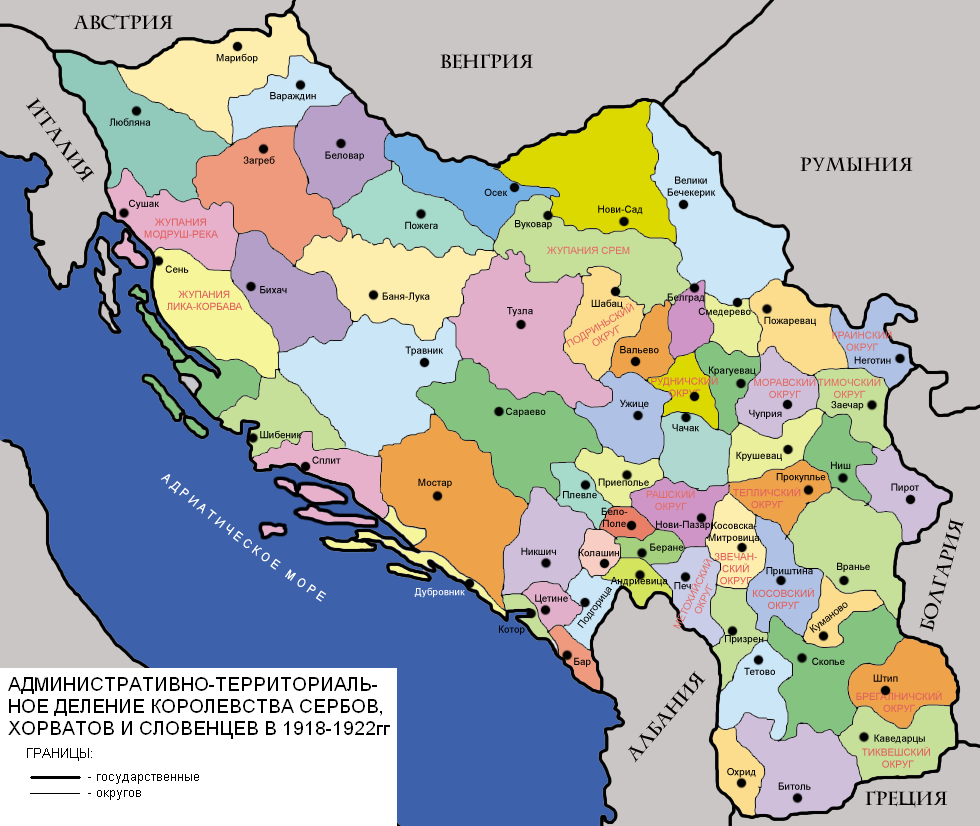
Национальный состав: сербы ~39%, хорваты ~24%, словенцы ~8%, бошняки ~6%, остальные (албанцы, немцы, венгры, македонцы) ~23%.
Религия: православие ~46%, католичество ~39%, ислам ~11%.
Экономика: разрыв между севером (индустриальная Словения, Хорватия) и югом (аграрная Сербия, Македония) — до 40%.
Две концепции устройства
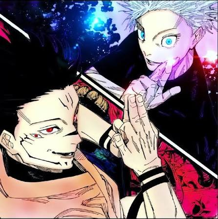
Унитаризм (централизм): только сильная власть из Белграда удержит страну. Сторонники: сербские элиты (Н. Пашич), офицерство.
Федерализм (автономия): страх ассимиляции, требование сохранить исторические права. Сторонники: Хорватская крестьянская партия (С. Радич), словенские клерикалы.
Временное правительство (1918–1920)
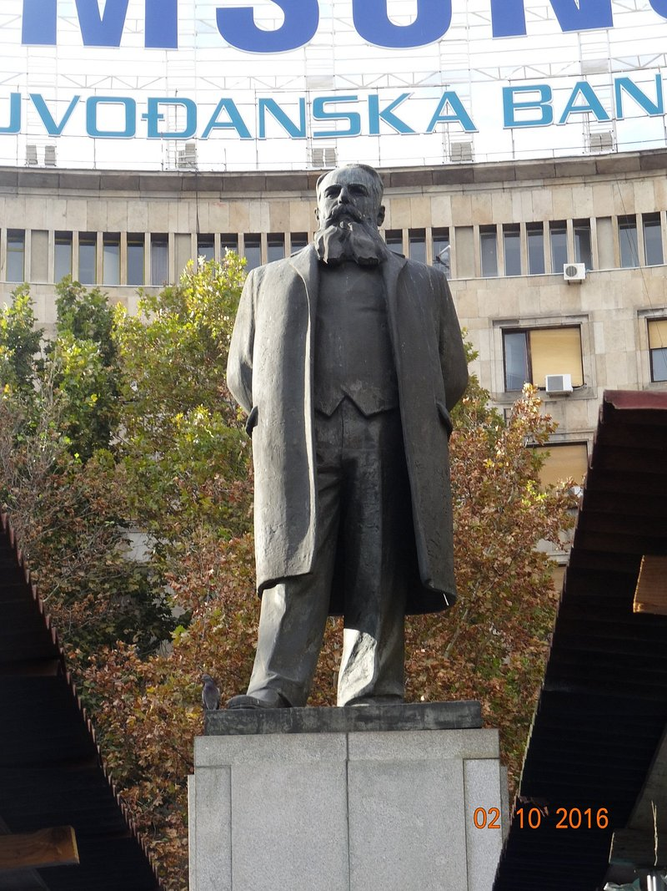
У Сербии — готовая армия, администрация, дипломатия. Из 16 министров — 10 сербы, 4 хорвата, 2 словенца. Ключевые портфели (армия, МВД, финансы) — у сербов.
Унификация налогов, таможни, почты по сербским образцам.
Видовданская конституция (28 июня 1921)
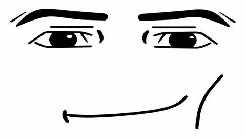
Голосование: За – 223 (сербские партии + боснийские мусульмане), Против – 35 (словенские клерикалы), Воздержались – 158 (бойкот хорватов и коммунистов).
Жёсткий централизм: 33 области, исторические границы стёрты. Хорватия не признаёт конституцию.
Убийство Степана Радича (1928)
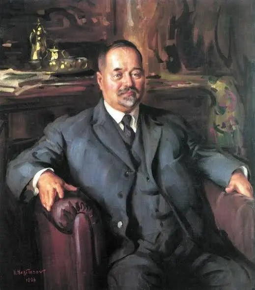
70% налогов из Хорватии уходит в Белград. 20 июня 1928 сербский депутат Рачич стреляет в хорватских депутатов в парламенте. Убит Степан Радич и двое его соратников.
Хорваты покидают Белград, страна на грани гражданской войны.
Диктатура 6 января 1929
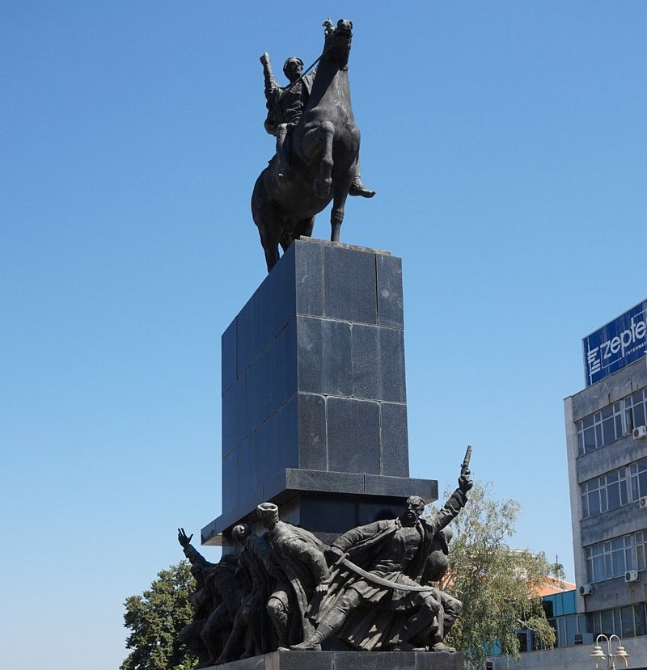
Причина: паралич парламента, угроза распада. Король и генералитет решили: «демократия не работает».
Меры: роспуск Скупщины, запрет партий, отмена конституции. Идеология «интегральный югославизм» — один народ с тремя племенами. Октябрь 1929: переименование в Королевство Югославия.
Бановины — перекройка карты
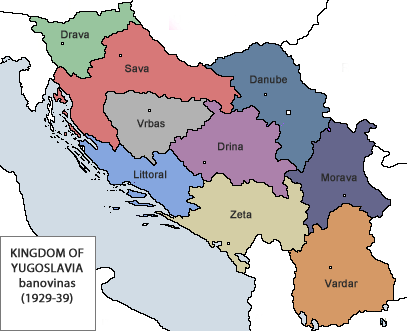
Цель: стереть исторические названия (Сербия, Хорватия, Словения). 9 бановин, названных по рекам. В 5 из 9 сербы — большинство. Сербы чувствуют себя хозяевами, хорваты — запертыми.
Внешний фактор и убийство короля
1931: Октроированная конституция (под давлением Франции). 9 октября 1934 король Александр убит в Марселе. Теракт организован усташами при поддержке Италии и Венгрии.
Внешние враги использовали внутреннее недовольство хорватов.
Регентство Павла
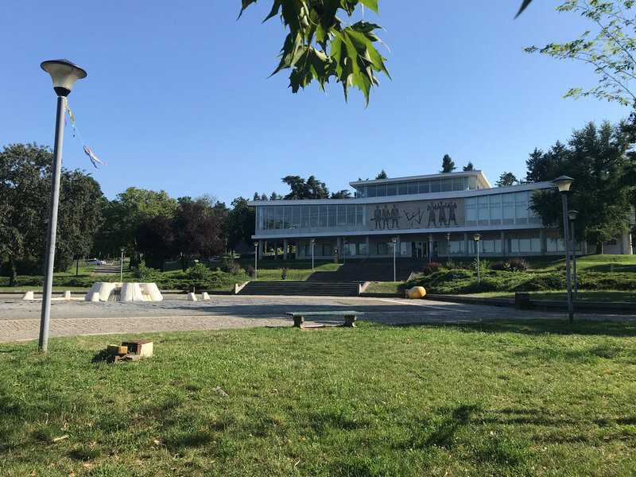
Регент Павел при малолетнем Петре II идёт на компромисс: ослабление цензуры, диалог с хорватским лидером Владко Мачеком.
Fun fact: создал крупнейший музей Югославии.
Культура как зеркало политики
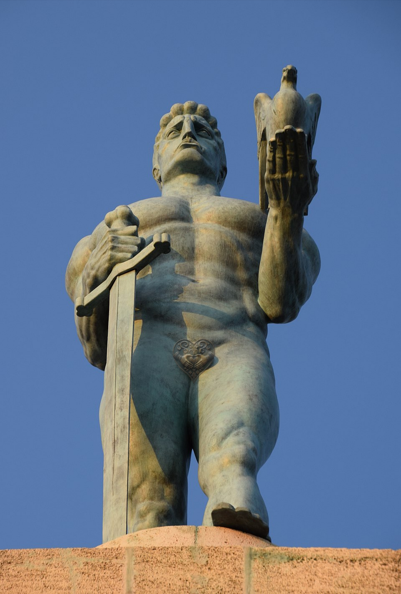
Официальная пропаганда: памятники династии по всей стране — попытка «зацементировать» единство.
Сербская идея: памятники косовским героям.
Хорватское сопротивление: «наивное искусство», крестьянские хоры.
Демография (ничего не изменилось)
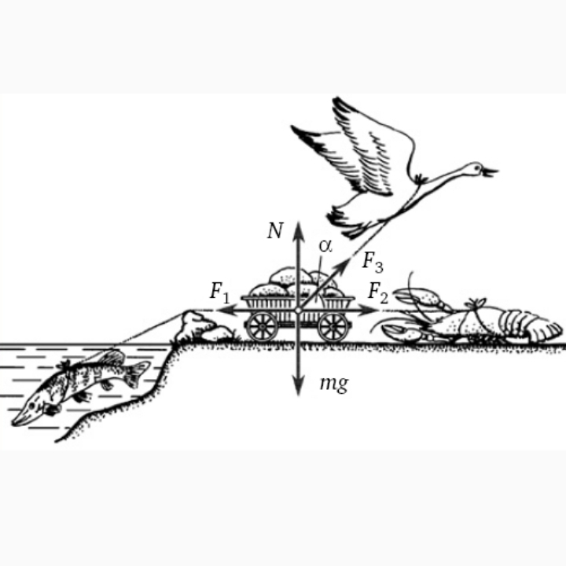
сербы ~40%, хорваты ~23%, остальные ~37%.
Главная причина краха
Унитаризм (1921–1939) проиграл — не смог ассимилировать хорватов. Федерализм (1939) победил частично, но создал новые конфликты с сербами.
Итог: игнорирование национальных чувств, попытка построить государство на доминировании одной группы.
«Все мои усилия...»
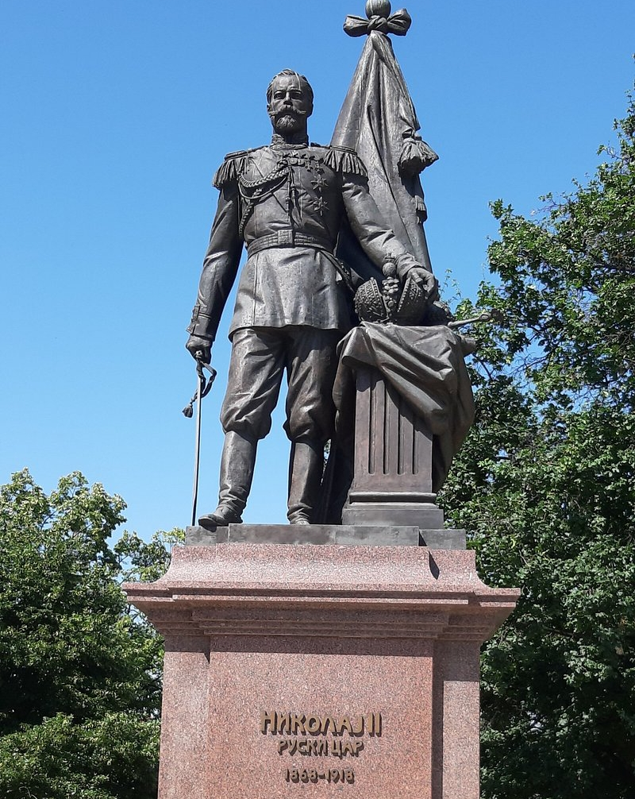
«Все мои усилия будут направлены к соблюдению достоинства Сербии… Ни в коем случае Россия не останется равнодушной к судьбе Сербии». (Из телеграммы Николая II королю Сербии Александру Карагеоргиевичу, июль 1914)
Спасибо за внимание!
«I have no enemies» — Марк А. А.